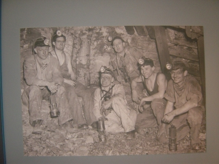

|
Mit de pungel nao de koel |

In het heemkundemuseum te Sint Odiliënberg
loopt deze maand nog een expositie over de
Limburgse steenkolenmijnbouw.
Een kleine doch zeer interessante cne doch zeer interessante collectie. De
toegang is €0,75.
Koempels aan het werk.
Prachtig bord van de Ned. Kath. Mijnwerkersbond.
Dit is een kerstkribje met koelepietfiguren.
© Koempels
Pleasure Dome